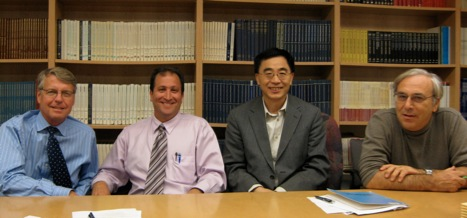

SURGICAL ENGINEERING ENTERPRISE (SEE)
SEE MISSION
Drexel University College of Medicine is developing a research and training program in surgical engineering, the Surgical Engineering Enterprise (SEE), as part of the five-year strategic plan.
SEE represents a collaboration among clinicians, scientists and engineers in the Drexel University College of Medicine, School of Biomedical Engineering, Science and Health Systems and the Drexel University College of Engineering. In conjunction with industrial partners, SEE seeks to develop a portfolio of cutting-edge, biotechnology-based surgical devices that will rapidly enter the surgical realm and enhance patients’ quality of life.
As a forward thinking initiative, SEE includes research and development, education and patrient-care components. SEE represents a prime example of translational biotechnology programs that draw on existing Drexel strength and is poised to propel the University into a leadership role within multiple arenas of surgical engineering.

The TEAM
As part of its Strategic Initiative, Drexel’s College of Medicine is developing a research and training program in surgical engineering, the Surgical Engineering Enterprise (SEE). Barry Waterhouse, Ph.D., Vice Dean for Biomedical Graduate and Postgraduate Studies, oversees and coordinates the activities of this program. The scientific director is Peter I. Lelkes, Ph.D., School of Biomedical Engineering, Science and Health Systems, Drexel University, and Departments of Pathology and Laboratory Medicine, Surgery and Biochemistry and Molecular Biology, Drexel University College of Medicine. Dr. Lelkes collaborates with Norman Johanson, M.D. and Frederic Kleinbart, M.D. of Orthopaedic Surgery, Ari Brooks, M.D., an Associate Professor of Department of Surgery, and Jack Zhou, Ph.D., an Associate Professor of Drexel’s Department of Mechanical Engineering and Mechanics.